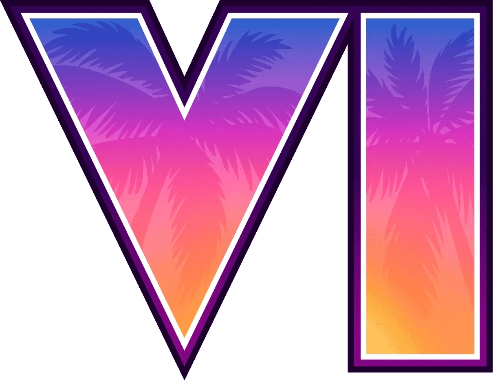

ao vivo00:00:00Deixe o celular parado, de pé, apontando pra você. A tela pode ficar acesa: ela não aparece na live.
No modo TikTok este celular vira a tela da live: jogo em cima, você embaixo. Comece a LIVE no TikTok transmitindo a tela, e o estúdio controla as cenas. A live dela continua igual.